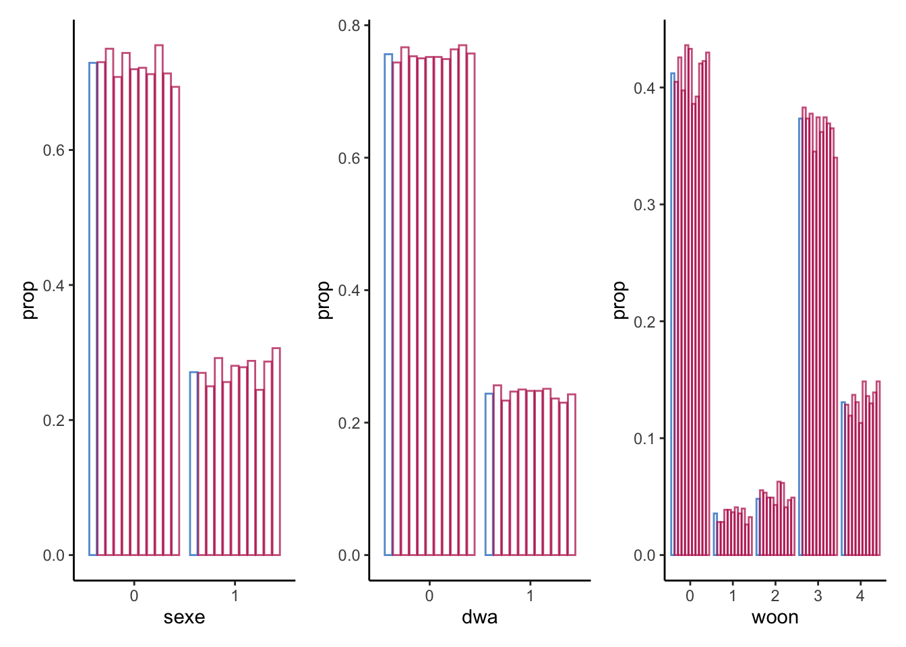
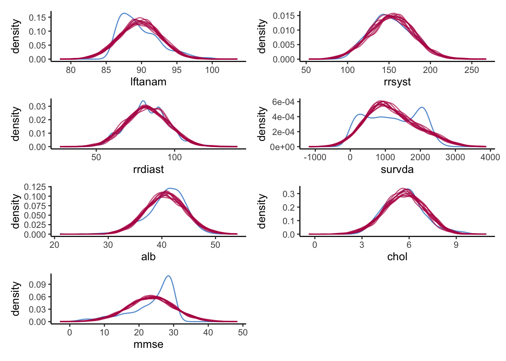
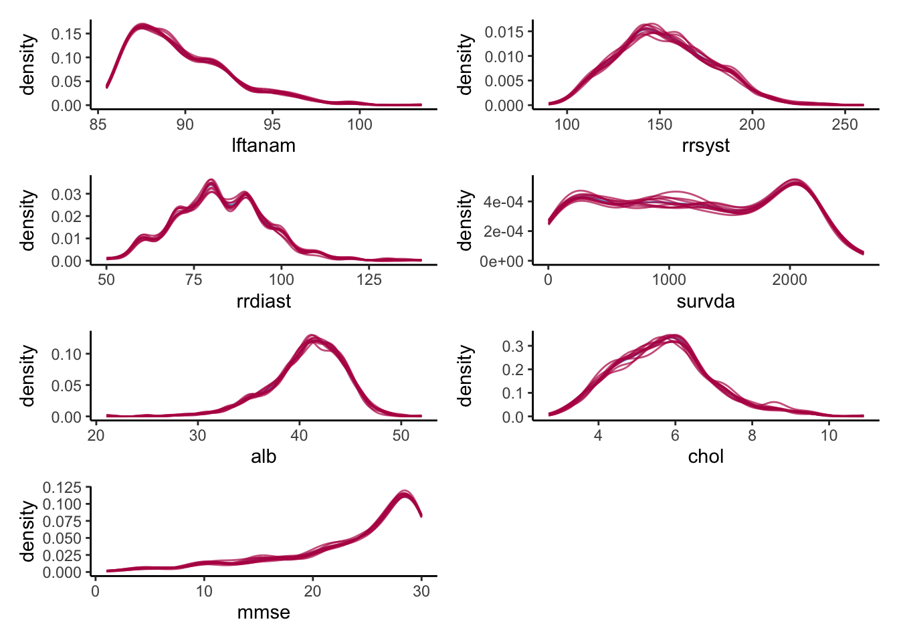
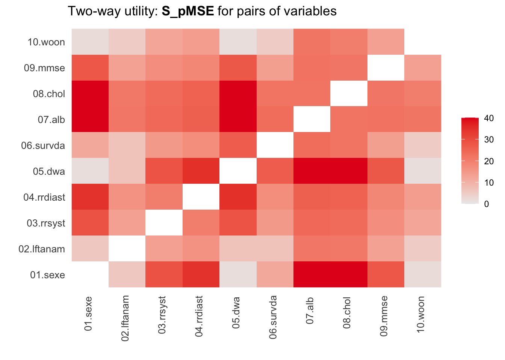
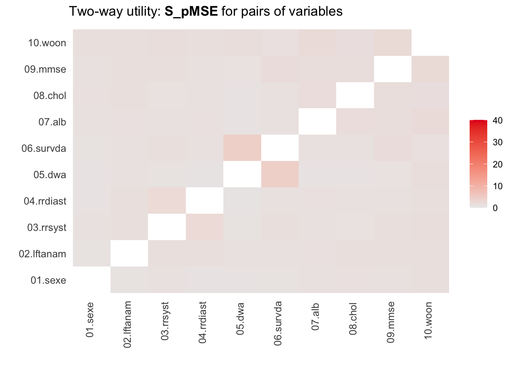

set.seed(123)
library("mice")
library("lattice")
library("survival")
library(dplyr)
library(tidyverse)
library(ggmice)
library(patchwork)
library(synthpop)mice: An approach to sensitivity analysis
Loading and arranging data
load("leiden.rData")
summary(leiden) sexe lftanam rrsyst rrdiast
Min. :0.0000 Min. : 85.48 Min. : 90.0 Min. : 50.00
1st Qu.:0.0000 1st Qu.: 87.50 1st Qu.:135.0 1st Qu.: 75.00
Median :0.0000 Median : 89.07 Median :150.0 Median : 80.00
Mean :0.2709 Mean : 89.78 Mean :152.9 Mean : 82.78
3rd Qu.:1.0000 3rd Qu.: 91.52 3rd Qu.:170.0 3rd Qu.: 90.00
Max. :1.0000 Max. :103.54 Max. :260.0 Max. :140.00
NA's :121 NA's :126
dwa survda alb chol
Min. :0.0000 Min. : 2.0 Min. :21.00 Min. : 2.700
1st Qu.:0.0000 1st Qu.: 534.8 1st Qu.:39.00 1st Qu.: 4.800
Median :0.0000 Median :1196.5 Median :41.00 Median : 5.700
Mean :0.2437 Mean :1195.4 Mean :40.77 Mean : 5.704
3rd Qu.:0.0000 3rd Qu.:1889.0 3rd Qu.:43.00 3rd Qu.: 6.400
Max. :1.0000 Max. :2610.0 Max. :52.00 Max. :10.900
NA's :229 NA's :232
mmse woon
Min. : 1.00 Min. :0.000
1st Qu.:21.00 1st Qu.:0.000
Median :26.00 Median :3.000
Mean :23.67 Mean :1.775
3rd Qu.:29.00 3rd Qu.:3.000
Max. :30.00 Max. :4.000
NA's :85 str(leiden)'data.frame': 956 obs. of 10 variables:
$ sexe : num 0 0 0 0 0 0 0 1 1 0 ...
$ lftanam: num 87.8 87.8 89.1 90.3 87.8 ...
$ rrsyst : num 160 140 155 155 110 120 180 135 130 160 ...
$ rrdiast: num 100 70 85 90 60 80 75 80 60 90 ...
$ dwa : num 0 0 0 0 0 0 0 0 0 0 ...
$ survda : num 1082 27 1604 528 1100 ...
$ alb : num 41 NA 41 44 37 NA 42 NA 45 46 ...
$ chol : num 4.4 NA 4.6 3.9 5.3 NA 7.2 NA 5.1 6.5 ...
$ mmse : num 12 9 25 27 14 NA 28 26 30 14 ...
$ woon : num 4 3 0 1 0 3 3 0 4 4 ...head(leiden) sexe lftanam rrsyst rrdiast dwa survda alb chol mmse woon
1 0 87.80 160 100 0 1082 41 4.4 12 4
2 0 87.75 140 70 0 27 NA NA 9 3
3 0 89.08 155 85 0 1604 41 4.6 25 0
4 0 90.29 155 90 0 528 44 3.9 27 1
5 0 87.76 110 60 0 1100 37 5.3 14 0
6 0 91.39 120 80 0 5 NA NA NA 3tail(leiden) sexe lftanam rrsyst rrdiast dwa survda alb chol mmse woon
1229 1 93.85 130 70 0 523 40 5.3 28 0
1230 0 92.20 190 90 0 1182 44 5.8 26 3
1232 0 95.02 150 80 0 861 35 5.0 28 0
1233 0 88.30 120 60 0 129 42 8.6 21 0
1235 1 89.02 140 80 0 374 40 5.2 23 0
1236 0 85.70 130 65 0 1744 36 7.2 27 3leiden$sexe <- factor(leiden$sexe, levels = c(0, 1), labels = c("0", "1"))
leiden$dwa <- factor(leiden$dwa, levels = c(0, 1), labels = c("0", "1"))
leiden$woon <- factor(leiden$woon, levels = c(0, 1, 2, 3, 4), labels = c("0", "1", "2", "3", "4"))
summary(leiden) sexe lftanam rrsyst rrdiast dwa
0:697 Min. : 85.48 Min. : 90.0 Min. : 50.00 0:723
1:259 1st Qu.: 87.50 1st Qu.:135.0 1st Qu.: 75.00 1:233
Median : 89.07 Median :150.0 Median : 80.00
Mean : 89.78 Mean :152.9 Mean : 82.78
3rd Qu.: 91.52 3rd Qu.:170.0 3rd Qu.: 90.00
Max. :103.54 Max. :260.0 Max. :140.00
NA's :121 NA's :126
survda alb chol mmse woon
Min. : 2.0 Min. :21.00 Min. : 2.700 Min. : 1.00 0:394
1st Qu.: 534.8 1st Qu.:39.00 1st Qu.: 4.800 1st Qu.:21.00 1: 34
Median :1196.5 Median :41.00 Median : 5.700 Median :26.00 2: 46
Mean :1195.4 Mean :40.77 Mean : 5.704 Mean :23.67 3:357
3rd Qu.:1889.0 3rd Qu.:43.00 3rd Qu.: 6.400 3rd Qu.:29.00 4:125
Max. :2610.0 Max. :52.00 Max. :10.900 Max. :30.00
NA's :229 NA's :232 NA's :85 str(leiden)'data.frame': 956 obs. of 10 variables:
$ sexe : Factor w/ 2 levels "0","1": 1 1 1 1 1 1 1 2 2 1 ...
$ lftanam: num 87.8 87.8 89.1 90.3 87.8 ...
$ rrsyst : num 160 140 155 155 110 120 180 135 130 160 ...
$ rrdiast: num 100 70 85 90 60 80 75 80 60 90 ...
$ dwa : Factor w/ 2 levels "0","1": 1 1 1 1 1 1 1 1 1 1 ...
$ survda : num 1082 27 1604 528 1100 ...
$ alb : num 41 NA 41 44 37 NA 42 NA 45 46 ...
$ chol : num 4.4 NA 4.6 3.9 5.3 NA 7.2 NA 5.1 6.5 ...
$ mmse : num 12 9 25 27 14 NA 28 26 30 14 ...
$ woon : Factor w/ 5 levels "0","1","2","3",..: 5 4 1 2 1 4 4 1 5 5 ...head(leiden) sexe lftanam rrsyst rrdiast dwa survda alb chol mmse woon
1 0 87.80 160 100 0 1082 41 4.4 12 4
2 0 87.75 140 70 0 27 NA NA 9 3
3 0 89.08 155 85 0 1604 41 4.6 25 0
4 0 90.29 155 90 0 528 44 3.9 27 1
5 0 87.76 110 60 0 1100 37 5.3 14 0
6 0 91.39 120 80 0 5 NA NA NA 3tail(leiden) sexe lftanam rrsyst rrdiast dwa survda alb chol mmse woon
1229 1 93.85 130 70 0 523 40 5.3 28 0
1230 0 92.20 190 90 0 1182 44 5.8 26 3
1232 0 95.02 150 80 0 861 35 5.0 28 0
1233 0 88.30 120 60 0 129 42 8.6 21 0
1235 1 89.02 140 80 0 374 40 5.2 23 0
1236 0 85.70 130 65 0 1744 36 7.2 27 32. Parametric approch for synthetic data
where <- make.where(leiden, "all")
method <- make.method(leiden, where = where)
missing <- is.na(leiden)
method[method == "pmm"] <- "norm"
syn_param <- mice(leiden,
m = 10,
maxit = 1,
method = method,
where = where,
printFlag = FALSE)
impd <- Map(function(imp_element, column_index) {
na_indices <- which(is.na(leiden[, column_index]))
imp_element[na_indices, ] <- NA
imp_element
}, syn_param$imp, seq_along(syn_param$imp))3. Perform a dry run (using maxit = 0) in mice. List the number of missing values per variable.
ini <- mice(leiden, maxit = 0)
sort(ini$nmis) sexe lftanam dwa survda woon mmse rrsyst rrdiast alb chol
0 0 0 0 0 85 121 126 229 232 sort(syn_param$nmis) sexe lftanam dwa survda woon mmse rrsyst rrdiast alb chol
0 0 0 0 0 85 121 126 229 232 - To get an idea of whether creating the synthetic data went accordingly, compare the 10 rows of the fourth synthetic data set with the first 10 rows of the original data.
complete(syn_param, 4) |>
head(10)
leiden |>
head(10)| sexe | lftanam | rrsyst | rrdiast | dwa | survda | alb | chol | mmse | woon |
|---|---|---|---|---|---|---|---|---|---|
| 0 | 91.12601 | 170.2284 | 77.97229 | 0 | 133.7017 | 36.12976 | 6.291575 | 26.57883 | 0 |
| 0 | 93.45669 | 134.9349 | 92.31398 | 0 | 1520.5880 | 39.22771 | 5.956016 | 24.35462 | 0 |
| 1 | 93.34282 | 132.0292 | 61.92429 | 1 | 740.2282 | 40.34946 | 7.760790 | 22.45311 | 0 |
| 1 | 91.94595 | 182.3169 | 81.08294 | 0 | 227.5029 | 44.85181 | 7.163870 | 24.97173 | 4 |
| 0 | 91.19062 | 133.7812 | 61.44630 | 0 | 602.2202 | 43.88407 | 5.695898 | 20.34968 | 3 |
| 0 | 86.67453 | 173.9873 | 68.19271 | 0 | 1036.6158 | 41.89373 | 4.963542 | 27.14842 | 3 |
| 0 | 92.79922 | 164.3517 | 70.38214 | 0 | 200.0684 | 49.00028 | 6.413988 | 23.53094 | 0 |
| 0 | 88.65806 | 141.0620 | 72.07872 | 0 | 1131.9118 | 44.65013 | 7.197434 | 27.61601 | 0 |
| 0 | 88.75973 | 121.8957 | 69.70716 | 0 | 1024.4234 | 39.38867 | 4.672269 | 25.59373 | 0 |
| 0 | 93.84398 | 197.2776 | 86.64754 | 0 | 832.6688 | 35.71418 | 7.372064 | 18.90310 | 4 |
| sexe | lftanam | rrsyst | rrdiast | dwa | survda | alb | chol | mmse | woon |
|---|---|---|---|---|---|---|---|---|---|
| 0 | 87.80 | 160 | 100 | 0 | 1082 | 41 | 4.4 | 12 | 4 |
| 0 | 87.75 | 140 | 70 | 0 | 27 | NA | NA | 9 | 3 |
| 0 | 89.08 | 155 | 85 | 0 | 1604 | 41 | 4.6 | 25 | 0 |
| 0 | 90.29 | 155 | 90 | 0 | 528 | 44 | 3.9 | 27 | 1 |
| 0 | 87.76 | 110 | 60 | 0 | 1100 | 37 | 5.3 | 14 | 0 |
| 0 | 91.39 | 120 | 80 | 0 | 5 | NA | NA | NA | 3 |
| 0 | 90.35 | 180 | 75 | 0 | 1573 | 42 | 7.2 | 28 | 3 |
| 1 | 86.06 | 135 | 80 | 0 | 11 | NA | NA | 26 | 0 |
| 1 | 95.17 | 130 | 60 | 0 | 1302 | 45 | 5.1 | 30 | 4 |
| 0 | 86.13 | 160 | 90 | 0 | 794 | 46 | 6.5 | 14 | 4 |
5. data visualization
complete(syn_param, 6) |>
psych::describe()Registered S3 method overwritten by 'psych':
method from
plot.residuals rmutil vars n mean sd median trimmed mad min max range
sexe* 1 956 1.28 0.45 1.00 1.22 0.00 1.00 2.00 1.00
lftanam 2 956 89.83 2.87 89.89 89.87 2.95 80.48 98.07 17.59
rrsyst 3 956 154.46 26.45 155.07 154.99 25.67 74.51 239.99 165.48
rrdiast 4 956 82.93 13.46 82.92 82.95 13.16 26.81 130.24 103.43
dwa* 5 956 1.25 0.43 1.00 1.19 0.00 1.00 2.00 1.00
survda 6 956 1195.91 715.26 1119.87 1169.83 712.32 -1186.09 3446.32 4632.42
alb 7 956 40.87 3.77 40.81 40.84 3.84 30.40 51.76 21.36
chol 8 956 5.76 1.27 5.78 5.78 1.34 1.51 9.18 7.67
mmse 9 956 23.60 6.98 23.56 23.57 7.00 -2.85 43.37 46.22
woon* 10 956 2.85 1.59 4.00 2.81 1.48 1.00 5.00 4.00
skew kurtosis se
sexe* 0.99 -1.02 0.01
lftanam -0.13 -0.10 0.09
rrsyst -0.16 0.03 0.86
rrdiast -0.02 0.09 0.44
dwa* 1.17 -0.64 0.01
survda 0.31 -0.18 23.13
alb 0.06 -0.15 0.12
chol -0.13 -0.28 0.04
mmse 0.00 0.06 0.23
woon* -0.10 -1.69 0.05leiden |>
psych::describe() vars n mean sd median trimmed mad min max range
sexe* 1 956 1.27 0.44 1.00 1.21 0.00 1.00 2.00 1.00
lftanam 2 956 89.78 2.92 89.07 89.43 2.81 85.48 103.54 18.06
rrsyst 3 835 152.89 25.77 150.00 152.06 29.65 90.00 260.00 170.00
rrdiast 4 830 82.78 13.13 80.00 82.61 14.83 50.00 140.00 90.00
dwa* 5 956 1.24 0.43 1.00 1.18 0.00 1.00 2.00 1.00
survda 6 956 1195.39 727.36 1196.50 1200.22 1000.76 2.00 2610.00 2608.00
alb 7 727 40.77 3.70 41.00 41.02 2.97 21.00 52.00 31.00
chol 8 724 5.70 1.27 5.70 5.64 1.19 2.70 10.90 8.20
mmse 9 871 23.67 6.55 26.00 24.74 4.45 1.00 30.00 29.00
woon* 10 956 2.78 1.59 4.00 2.72 1.48 1.00 5.00 4.00
skew kurtosis se
sexe* 1.03 -0.94 0.01
lftanam 1.04 0.93 0.09
rrsyst 0.39 0.04 0.89
rrdiast 0.31 0.49 0.46
dwa* 1.19 -0.58 0.01
survda -0.02 -1.31 23.52
alb -0.82 1.69 0.14
chol 0.51 0.50 0.05
mmse -1.30 0.98 0.22
woon* -0.05 -1.73 0.05- Create a bar plot using
geom_bar()for each categorical variable in the data, mapping these variables to thex-axis with one bar per category per imputed data set.
colnames(leiden)[map_lgl(leiden, is.factor)] %>%
map(~ ggmice(syn_param, mapping = aes_string(.x, group = '.imp')) +
geom_bar(mapping = aes(y = ..prop..),
position = position_dodge2(),
fill = "transparent",
show.legend = FALSE)) %>%
patchwork::wrap_plots()Warning: `aes_string()` was deprecated in ggplot2 3.0.0.
ℹ Please use tidy evaluation idioms with `aes()`.
ℹ See also `vignette("ggplot2-in-packages")` for more information.Warning: The dot-dot notation (`..prop..`) was deprecated in ggplot2 3.4.0.
ℹ Please use `after_stat(prop)` instead.
ℹ The deprecated feature was likely used in the ggmice package.
Please report the issue at <https://github.com/amices/ggmice>.
colnames(leiden)[map_lgl(leiden, is.numeric)] %>%
map(~ ggmice(data = syn_param,
mapping = aes_string(x = .x, group = '.imp')) +
geom_density(show.legend = F)) %>%
wrap_plots(ncol = 2)
7. Non-parametric approach to synthesize data
syn_cart <- mice(leiden,
m = 10,
maxit = 1,
method = "cart",
where = where,
printFlag = FALSE)
syn_cart$imp <- Map(function(imp_element, column_index) {
na_indices <- which(is.na(leiden[, column_index]))
imp_element[na_indices, ] <- NA
imp_element
}, syn_cart$imp, seq_along(syn_cart$imp))8. Perform a dry run (using maxit = 0) in mice. List the number of missing values per variable.
ini <- mice(leiden, maxit = 0)
sort(ini$nmis) sexe lftanam dwa survda woon mmse rrsyst rrdiast alb chol
0 0 0 0 0 85 121 126 229 232 sort(syn_cart$nmis) sexe lftanam dwa survda woon mmse rrsyst rrdiast alb chol
0 0 0 0 0 85 121 126 229 232 - Create a bar plot using
geom_bar()for each categorical variable in the data, mapping these variables to thex-axis with one bar per category per imputed data set.
colnames(leiden)[map_lgl(leiden, is.factor)] %>%
map(~ ggmice(syn_cart, mapping = aes_string(.x, group = '.imp')) +
geom_bar(mapping = aes(y = ..prop..),
position = position_dodge2(),
fill = "transparent",
show.legend = FALSE)) %>%
patchwork::wrap_plots()colnames(leiden)[map_lgl(leiden, is.numeric)] %>%
map(~ ggmice(data = syn_cart,
mapping = aes_string(x = .x, group = '.imp')) +
geom_density(show.legend = F)) %>%
wrap_plots(ncol = 2)Warning: Removed 1210 rows containing non-finite values (`stat_density()`).Warning: Removed 1260 rows containing non-finite values (`stat_density()`).Warning: Removed 2290 rows containing non-finite values (`stat_density()`).Warning: Removed 2320 rows containing non-finite values (`stat_density()`).Warning: Removed 850 rows containing non-finite values (`stat_density()`).
- Calculate the pMSE for the selected variables
param_mse <- complete(syn_param, "all", include = FALSE) |>
utility.gen.list(leiden,
vars = c("survda", "rrsyst", "rrdiast"),
maxorder = 0,
method = "logit")Fitting syntheses: 1 2 3 4 5 6 7 8 9 10 param_mse
Utility score calculated by method: logit
Call:
utility.gen.list(object = complete(syn_param, "all", include = FALSE),
data = leiden, method = "logit", maxorder = 0, vars = c("survda",
"rrsyst", "rrdiast"))
Mean utility results from 10 syntheses:
pMSE S_pMSE
0.018061 55.252113 cart_mse <- complete(syn_cart, "all", include = FALSE) |>
utility.gen.list(leiden,
vars = c("survda", "rrsyst", "rrdiast"),
maxorder = 0,
method = "logit")Fitting syntheses: 1 2 3 4 5 6 7 8 9 10 cart_mse
Utility score calculated by method: logit
Call:
utility.gen.list(object = complete(syn_cart, "all", include = FALSE),
data = leiden, method = "logit", maxorder = 0, vars = c("survda",
"rrsyst", "rrdiast"))
Mean utility results from 10 syntheses:
pMSE S_pMSE
0.000051 0.155265 cart_mse <- mean(cart_mse$pMSE) / ((4-1)*(1/2)^3/(2*nrow(leiden)))
param_mse <- mean(param_mse$pMSE) / ((4-1)*(1/2)^3/(2*nrow(leiden)))Multivariate data utility
General utility measures
- Use the function
utility.gen.list()from thesynthpoppackage to calculate the \(pMSE\)-ratio for each pair of variables for both synthetic sets. What do you see?__
param_dats <- complete(syn_param, "all", include = F)
cart_dats <- complete(syn_cart, "all", include = F)
utility.gen.list(param_dats, leiden)Running 50 permutations to get NULL utilities and printing every 10th.
synthesis 10 20 30 40 50
synthesis 10 20 30 40 50
synthesis 10 20 30 40 50
synthesis 10 20 30 40 50
synthesis 10 20 30 40 50
synthesis 10 20 30 40 50
synthesis 10 20 30 40 50
synthesis 10 20 30 40 50
synthesis 10 20 30 40 50
synthesis 10 20 30 40 50
Utility score calculated by method: cart
Call:
utility.gen.list(object = param_dats, data = leiden)
Null utilities simulated from a permutation test with 50 replications.
Mean utility results from 10 syntheses:
pMSE S_pMSE
0.237266 4.390622 utility.gen.list(cart_dats, leiden)Running 50 permutations to get NULL utilities and printing every 10th.
synthesis 10 20 30 40 50
synthesis 10 20 30 40 50
synthesis 10 20 30 40 50
synthesis 10 20 30 40 50
synthesis 10 20 30 40 50
synthesis 10 20 30 40 50
synthesis 10 20 30 40 50
synthesis 10 20 30 40 50
synthesis 10 20 30 40 50
synthesis 10 20 30 40 50
Utility score calculated by method: cart
Call:
utility.gen.list(object = cart_dats, data = leiden)
Null utilities simulated from a permutation test with 50 replications.
Mean utility results from 10 syntheses:
pMSE S_pMSE
0.091389 1.881102 - Use the function utility.tables.list() from the synthpop package to calculate the -ratio for each pair of variables for both synthetic sets. What do you see?
utility.tables.list(param_dats, leiden,
min.scale = 0, max.scale = 40)Maximum of plot scale set to 40 (lower than maximum in results 53.06551).
Two-way utility: S_pMSE value plotted for 45 pairs of variables.
Variable combinations with worst 5 utility scores (S_pMSE):
01.sexe:07.alb 01.sexe:08.chol 05.dwa:07.alb 05.dwa:08.chol
53.0655 52.9760 52.2277 49.9561
04.rrdiast:05.dwa
34.4405 
Medians and maxima of selected utility measures for all tables compared
Medians Maxima
pMSE 0.0278 0.0593
S_pMSE 21.2462 53.0655
df 29.0000 35.0000
For more details of all scores use print.tabs = TRUE.utility.tables.list(cart_dats, leiden,
min.scale = 0, max.scale = 40)
Two-way utility: S_pMSE value plotted for 45 pairs of variables.
Variable combinations with worst 5 utility scores (S_pMSE):
05.dwa:06.survda 03.rrsyst:04.rrdiast 09.mmse:10.woon
4.4076 2.3806 2.2944
07.alb:10.woon 06.survda:09.mmse
2.1975 1.9564 
Medians and maxima of selected utility measures for all tables compared
Medians Maxima
pMSE 0.0023 0.0045
S_pMSE 1.2923 4.4076
df 29.0000 35.0000
For more details of all scores use print.tabs = TRUE.- Append the original data to the synthetic data, and check whether some of the observations in the original data also occur in the synthetic data.
combined_data <- complete(syn_cart, 2) %>%
dplyr::bind_rows(leiden)
duplicated_index <- combined_data %>%
duplicated %>%
which()
duplicated_indexinteger(0)synthetic_leiden <- complete(syn_cart, 2)
save(synthetic_leiden, file = "syntheticData_2.RData")